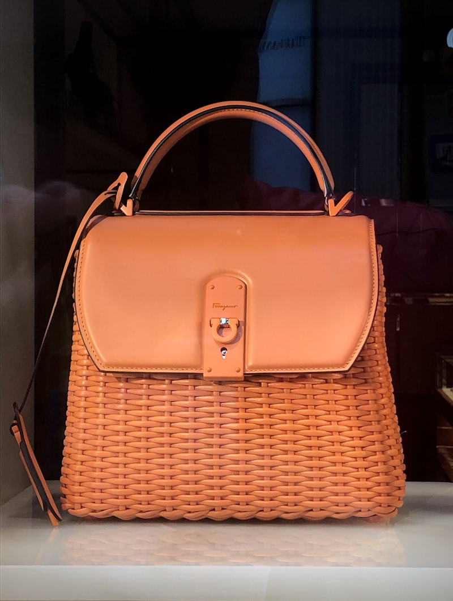
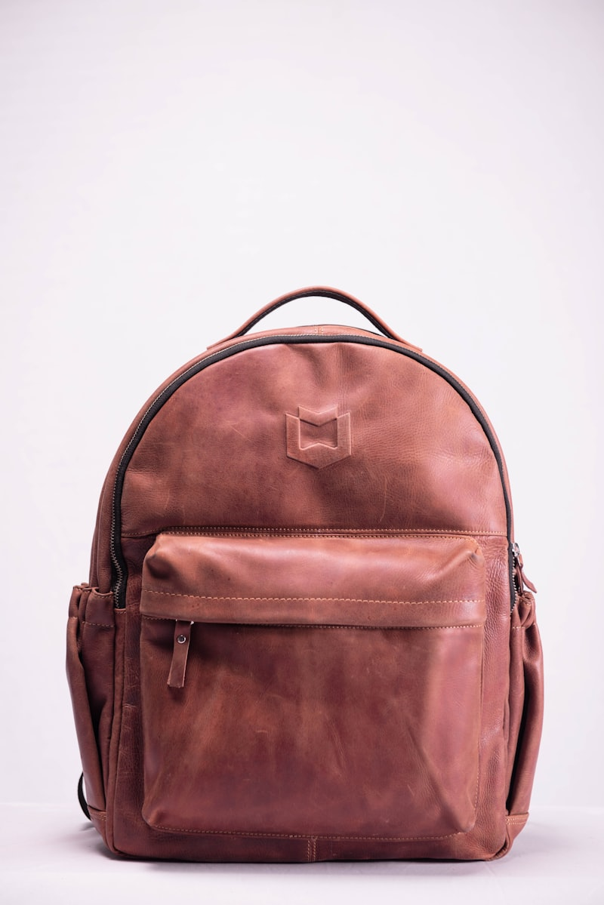

[ STUDY RESEARCH // ARCHIVE ]
Leather stitch calibrations, pocket volume checks, & compartment ergonomics.
A structured collection of technical articles on needle stitch calibrations, pocket sizes, lining wear indexes, and carry load limits.

Artisan Stitch: Linen Thread Spacings
How thread tension limits and needle holes prevent leather grain cracks during strap pulls.

Active Linings: Canvas Wear Tests
Measuring friction levels across pocket linings to avoid fiber wear from keys and tools.

Briefcase Buckles: Brass Load Margins
How hardware metal densities protect bag latches from bending under weight drops.
Leather Backpacks: Shoulder Cushion Curves
Evaluating strap widths to distribute heavy carry loads across back shoulders cleanly.

Artisan Tanneries: Oil Bleed Checks
Measuring polyurethane sealant bonds to protect bag surfaces from grease spots.

Luxury Handbags: Hinge Swing Clearance
How pocket openings and hinge lines ensure quick, safe access to bag interiors.

Artisan Tanneries: Tannic Acid Swells
Measuring leather fiber swelling rates inside high humidity tanning baths.
Lining Tests: Humidity Blockers
Analyzing water repellent barriers to design clean interior compartments for notebooks.

Leather Straps: Watch Loop Seams
Evaluating vertical thread clearances inside mini strap accessory loops.

Artisan Hides: Razor Cutting Edges
Measuring knife drag margins across vegetable tanned steerhide cuts.

Artisan Briefcases: Handle Sags
How copper rivet reinforcements prevent handle sags under thirty kilos.

Leather Backpacks: Weight Balances
Calibrating strap connector loops to align heavy backpacks with spinal axes.